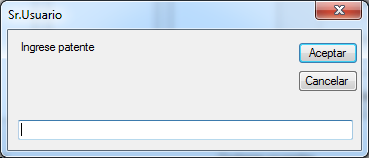
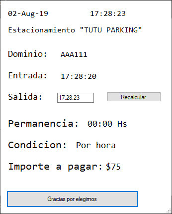
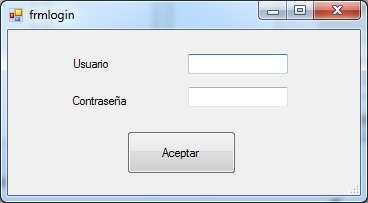
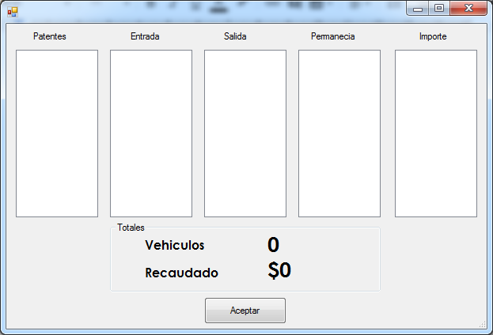

Algoritmos y estructuras de datos
Alumno:
Frega Santiago 2ºAO
Profesores:
Carlos González
Sebastián Miraglia
Descripcion
El programa permite controlar el funcionamiento de un estacionamiento de vehículos. Validador de patentes y control automático del importe a pagar por el usuario dependiendo del tiempo del uso del mismo. Posibilidad de ver en tiempo real la cantidad de cocheras ocupadas e información del vehículo que las ocupa. Además se permite iniciar sesión por parte de un administrador para obtener información sobre el registro del total de vehículos estacionados en el día.
Manual de usuario
Al iniciar el programa se abre una ventana como la siguiente en la que aparecen 3 listas que muestran el estado de los vehículos estacionados en el momento. Además el programa muestra la fecha actual y la cantidad de cocheras ocupadas.
Al hacer click en los botones estacionar o retirar aparece la siguiente ventana que permite ingresar la patente del vehículo que ingresa o egresa del estacionamiento.
Si se presiona el botón de salir y se introduce una patente válida, aparecera la siguiente ventana representando al ticket de estacionamiento que contiene informacion sobre el vehículo retirado, el tiempo de permanencia del mismo y el importe a pagar por el uso del estacionamiento
Si el usuario hace click en el botón admin de la pantalla principal le aparecerá una ventana de login en el que al poner un usuario y contraseña válido se abre otra ventana con cinco listas sobre el estado de los vehículos totales ingresados en el dia. Además desde aquí se puede ver la cantidad de vehículos ingresados y el dinero recaudado en todo el día.
 Comentarios
- En la ventana de login se debe poner la palabra “admin” como usuario y contraseña para ingresar a la siguiente ventana.
- El estacionamiento se debe usar solamente en un dia ya que el sistema no detecta el cambio de este. Por lo tanto la hora mínima permitida para ingresar es a las 00:00 hs y el horario máximo para salir es a las 23:59 hs de ese mismo dia.